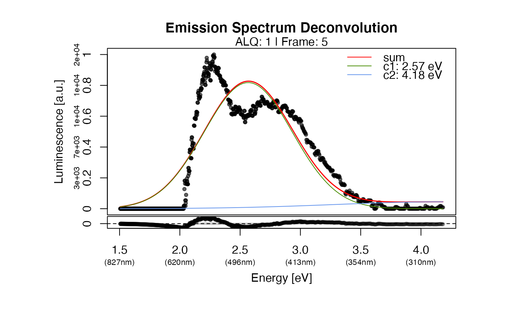

Luminescence spectra deconvolution on RLum.Data.Spectrum and matrix objects
on an energy scale. The function is optimised for emission spectra typically
obtained in the context of TL, OSL and RF measurements detected between 200 and 1000 nm.
The function is not prepared to deconvolve TL curves (counts against temperature;
no wavelength scale). If you are interested in such analysis, please check, e.g.,
the package 'tgcd'.
fit_EmissionSpectra(
object,
frame = NULL,
n_components = NULL,
start_parameters = NULL,
sub_negative = 0,
input_scale = NULL,
method_control = list(),
verbose = TRUE,
plot = TRUE,
...
)RLum.Data.Spectrum, matrix (required): input object. Please note that an energy spectrum is expected
numeric (optional): defines the frame to be analysed
numeric (optional): allows a number of the aimed number of components. However, it defines rather a maximum than than a minimum. Can be combined with other parameters.
numeric (optional): allows to provide own start parameters for a semi-automated procedure. Parameters need to be provided in eV. Every value provided replaces a value from the automated peak finding algorithm (in ascending order).
numeric (with default): substitute negative values in the input object
by the number provided here (default: 0). Can be set to NULL, i.e. negative values are kept.
character (optional): defines whether your x-values define wavelength or
energy values. For the analysis an energy scale is expected, allowed values are 'wavelength' and
'energy'. If nothing (NULL) is defined, the function tries to understand the input
automatically.
list (optional): options to control the fit method, see details
logical (with default): enable/disable verbose mode
logical (with default): enable/disable plot output
further arguments to be passed to control the plot output
(supported: main, xlab, ylab, xlim, ylim, log, mtext, legend (TRUE or FALSE),
legend.text, legend.pos)
-----------------------------------
[ NUMERICAL OUTPUT ]
-----------------------------------
RLum.Results-object
slot:
@data
| Element | Type | Description |
$data | matrix | the final fit matrix |
$fit | nls | the fit object returned by minpack.lm::nls.lm |
$fit_info | list | a few additional parameters that can be used to asses the quality of the fit |
slot:
@info
The original function call
---------------------------------
[ TERMINAL OUTPUT ]
---------------------------------
The terminal output provides brief information on the
deconvolution process and the obtained results.
Terminal output is only shown of the argument verbose = TRUE.
---------------------------
[ PLOT OUTPUT ]
---------------------------
The function returns a plot showing the raw signal with the detected components. If the fitting failed, a basic plot is returned showing the raw data and indicating the peaks detected for the start parameter estimation. The grey band in the residual plot indicates the 10% deviation from 0 (means no residual).
Used equation
The emission spectra (on an energy scale) can be best described as the sum of multiple Gaussian components:
'$$ y = \Sigma Ci * 1/(\sigma_{i} * \sqrt(2 * \pi)) * exp(-1/2 * ((x - \mu_{i})/\sigma_{i}))^2) $$
with the parameters \(\sigma\) (peak width) and \(\mu\) (peak centre) and \(C\) (scaling factor).
Start parameter estimation and fitting algorithm
The spectrum deconvolution consists of the following steps:
Peak finding
Start parameter estimation
Fitting via minpack.lm::nls.lm
The peak finding is realised by an approach (re-)suggested by Petr Pikal via the R-help
mailing list (https://stat.ethz.ch/pipermail/r-help/2005-November/thread.html) in November 2005.
This goes back to even earlier discussion in 2001 based on Prof Brian Ripley's idea.
It smartly uses the functions stats::embed and max.col to identify peaks positions.
For the use in this context, the algorithm has been further modified to scale on the
input data resolution (cf. source code).
The start parameter estimation uses random sampling from a range of meaningful parameters
and repeats the fitting until 1000 successful fits have been produced or the set max.runs value
is exceeded.
Currently the best fit is the one with the lowest number for squared residuals, but
other parameters are returned as well. If a series of curves needs to be analysed,
it is recommended to make few trial runs, then fix the number of components and
run at least 10,000 iterations (parameter method_control = list(max.runs = 10000)).
Supported method_control settings
| Parameter | Type | Default | Description |
max.runs | integer | 10000 | maximum allowed search iterations, if exceed the searching stops |
graining | numeric | 15 | gives control over how coarse or fine the spectrum is split into search intervals for the peak finding algorithm |
norm | logical | TRUE | normalises data to the highest count value before fitting |
trace | logical | FALSE | enables/disables the tracing of the minimisation routine |
0.1.1
Kreutzer, S., 2023. fit_EmissionSpectra(): Luminescence Emission Spectra Deconvolution. Function version 0.1.1. In: Kreutzer, S., Burow, C., Dietze, M., Fuchs, M.C., Schmidt, C., Fischer, M., Friedrich, J., Mercier, N., Philippe, A., Riedesel, S., Autzen, M., Mittelstrass, D., Gray, H.J., Galharret, J., 2023. Luminescence: Comprehensive Luminescence Dating Data Analysis. R package version 0.9.23. https://CRAN.R-project.org/package=Luminescence
##load example data
data(ExampleData.XSYG, envir = environment())
##subtract background
TL.Spectrum@data <- TL.Spectrum@data[] - TL.Spectrum@data[,15]
results <- fit_EmissionSpectra(
object = TL.Spectrum,
frame = 5,
method_control = list(max.runs = 10)
)
#>
#> [fit_EmissionSpectra()]
#>
#> >> Treating dataset >> 5 <<
#> >> Wavelength scale detected ...
#> >> Wavelength to energy scale conversion ... [OK]
#>
>> Searching components ... [-]
>> Searching components ... [/]
>> Searching components ... [/]
>> Searching components ... [-]
>> Searching components ... [-]
>> Searching components ... [-]
>> Searching components ... [/]
>> Searching components ... [/]
>> Searching components ... [-]
>> Searching components ... [-]
>> Searching components ... [OK]
#>
#> >> Fitting results (1 component model):
#> -------------------------------------------------------------------------
#> mu SE(mu) sigma SE(sigma) C SE(C)
#> [1,] 2.578405 0.006164145 0.3748431 0.005834923 0.7750861 0.01085102
#> -------------------------------------------------------------------------
#> SE: standard error | SSR: 2.164e+01| R^2: 0.807 | R^2_adj: 0.1938
#> (use the output in $fit for a more detailed analysis)
#>

##deconvolution of a TL spectrum
if (FALSE) {
##load example data
##replace 0 values
results <- fit_EmissionSpectra(
object = TL.Spectrum,
frame = 5, main = "TL spectrum"
)
}